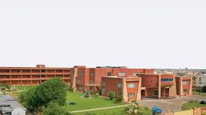

BAHRIA TOWN SCHOOLS AND COLLEDGES
Bahria Town School Lahore started as a single campus in Sector B, with a few students. Over the past 16 years, the school has grown into a multi-campus school system with seven campuses in two cities and a student body comprising of 6800+ students. The growth in the number of students over the past few years has been phenomenal. The Bahria Town Management, throughout this period has responded by an extremely proactive approach and continuously added new purpose-built campuses, to cater to the growth. We have a challenging academic and Co-curricular program to prepare our students to compete at the highest level. Outstanding external Board Examinations results over the past few years reflect the commitment of our academic staff. Bahria Town School students are earning accolades in some of the best private schools by competing and winning top positions in various extracurricular competitions.
OVERVIEW
Bahria Town School & College offers certification of Cambridge Assessment International Education (CAIE) formerly known as Cambridge International Examination (CIE), Lahore Board for Lahore Campuses and Aga Khan Board for Karachi Campus.
Lahore Campuses offer education from Preschool and go up to Matriculation, O-Levels, A-Levels and Intermediate are also offered at the Girls College, Lahore.
Our Karachi Campus offers classes from Preschool to Matric, O levels, Intermediate and A levels.
We offer a challenging academic program with extensive extracurricular activities. Our mission is to provide a nurturing environment to help students excel according to their individual capabilities. We aim to inspire the children to realize their full potential and develop into productive young adults with discipline and integrity. Modern purpose-built air-conditioned campuses, state of the art laboratories, qualified and trained faculty members and the school transport facility, all together, make BTSC a great place to teach and learn. The schools of Bahria Town are committed to provide quality education and developmental activities to groom our students into responsible, informed and creative individuals capable of achieving their true potential.